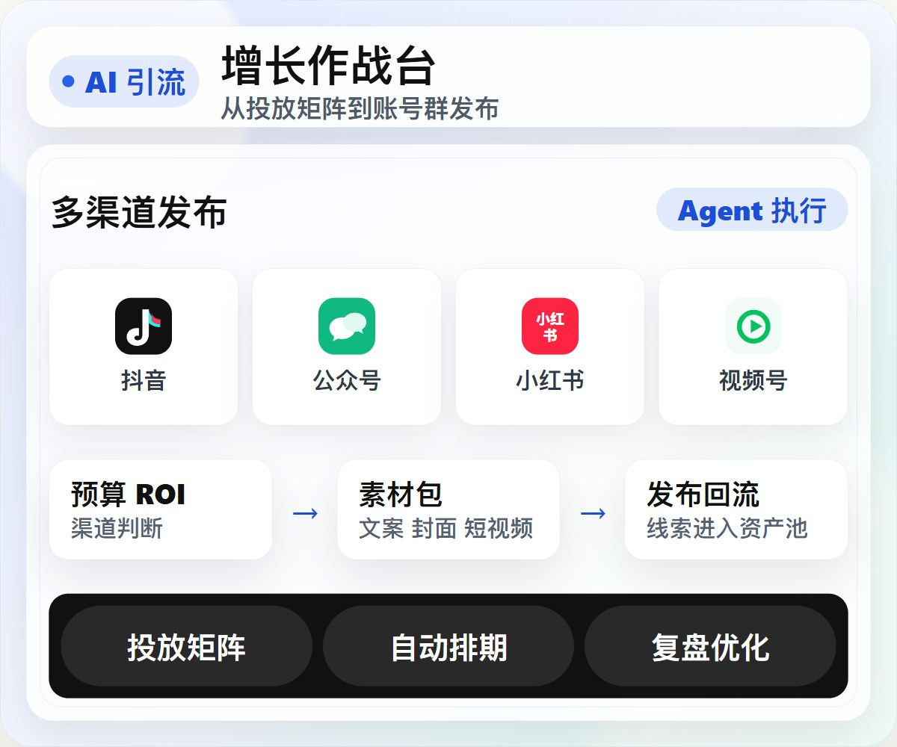
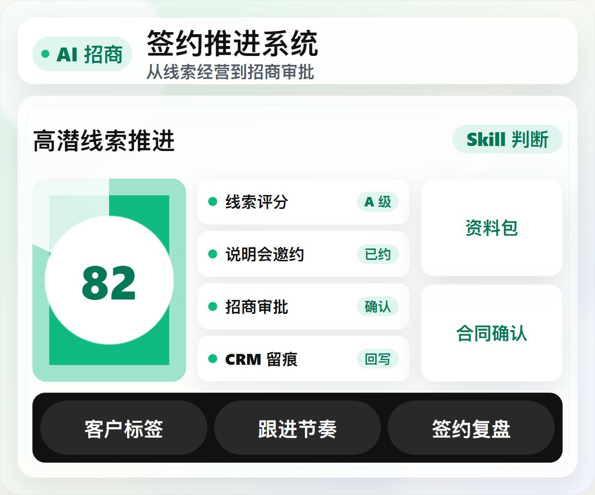
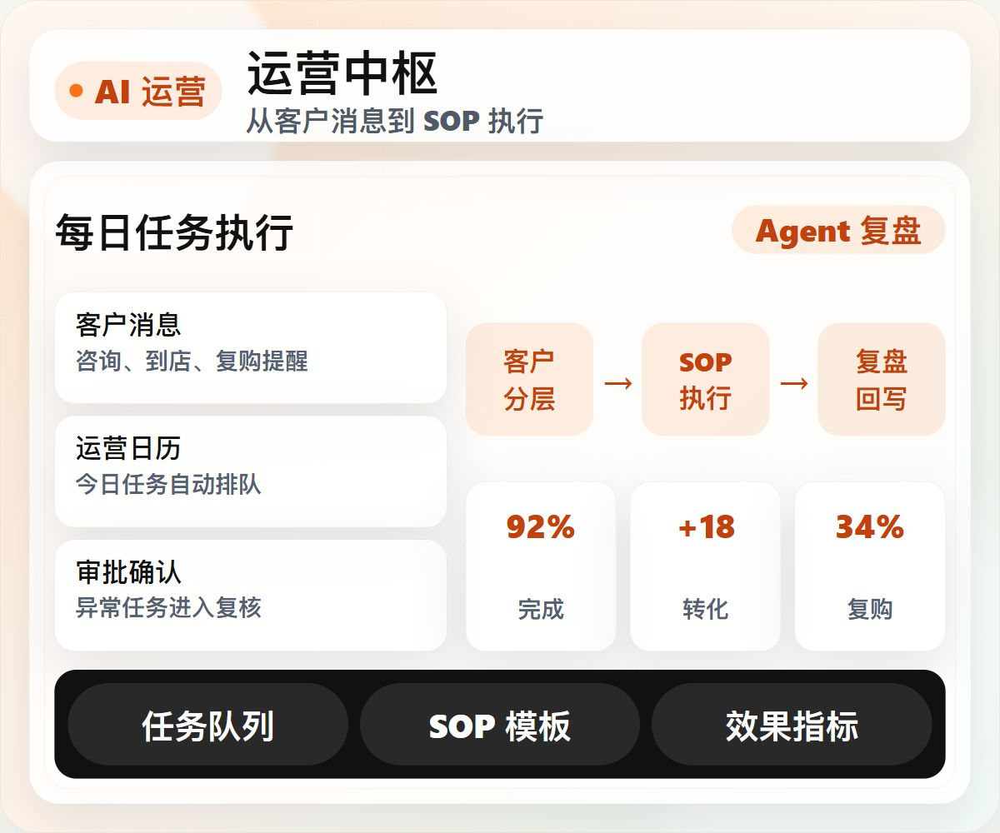
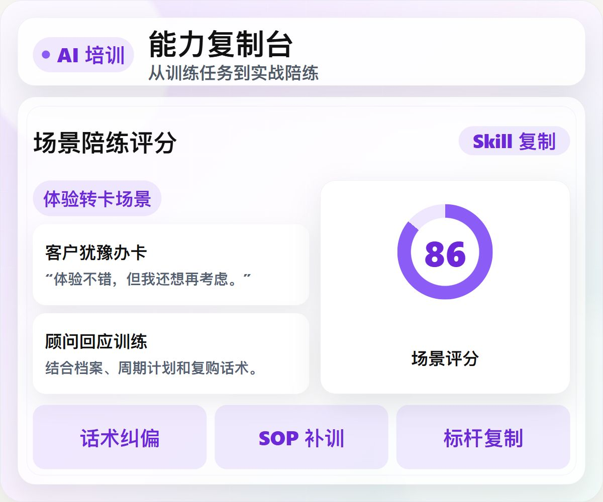

AI 引流
投放矩阵到账号
群发布
群发布
把渠道判断、预算 ROI、素材包和账号发布接进同一个增长作战台。

把渠道判断、预算 ROI、素材包和账号发布接进同一个增长作战台。

线索评分、招商跟进、资料确认、CRM 留痕变成签约推进系统。

把客户消息、运营日历、任务审批和 SOP 模板接进每日运营中枢。

训练任务、实战陪练、评分验收和角色工作台沉淀成能力复制系统。
对标行业最佳实践只是起点，难的是把方法落到线索、客户和团队执行里。 Skill 把方法封装起来，再由 Agent 在四个 AI APP 中持续执行。
企业不缺建议，缺的是把标杆方法拆成能执行、能检查、能复盘的动作。
AI 引流把预算、渠道、素材和发布组成一套可执行的获客闭环。
把渠道表现、预算消耗、到店转化和 ROI 放在同一张矩阵里，先判断机会与风险，再生成下一步动作。
把品牌素材、高转化案例和渠道规则沉淀成一套素材流，供 AI 生成、组装和发布调用。
输入目标后，AI 会加载 Skill，拆解矩阵、素材、发布、审批和复盘，把对话变成可追踪任务。
把账号状态、发布要素、审批边界和未来排期放进同一条发布流，让通过的素材包按渠道节奏进入队列。
把标杆 Skill、SOP、指标阈值和平台数据接入统一配置，让矩阵、素材、发布和复盘都调用同一套规则。
AI 招商围绕线索阶段、客户档案、会务工作流和审批确认推进签约。
把阶段、评分、画像和招商群放进同一条线索经营流，先判断谁值得推进，再安排跟进动作。
把会务、资料、裂变和审批节点放进同一条招商执行流，按时间推进、按状态复盘。
输入目标后，AI 会加载 Skill，筛选线索、生成任务、触发审批并回写记录，把对话变成可追踪招商动作。
把资料外发、政策承诺、价格变动和批量动作接入审批流，AI 先说明原因，人再决定通过、调整或驳回。
把标杆 Skill、品牌画像、测算和 CRM 字段统一为招商底座，让线索、流程、AI 指令和审批共用一套规则。
AI 运营覆盖客户线索、运营工作流到任务审批与执行的运营全流程。
把客户线索、客户群、客户评分和账号管理放进同一条运营流，先判断客户价值，再生成触达动作。
把每日任务、周视图排期、运营文档和日报状态放进同一条工作流，按时间推进、按结果复盘。
输入目标后，AI 会加载客户信号和运营 Skill，生成触达任务、提交审批、回写记录，把对话变成可复盘运营动作。
把优惠券、批量触达、价格承诺和高风险话术接入审批流，AI 先说明原因，人再确认、调整或放行。
把标杆 Skill、运营 SOP、指标预警和 CRM 接入统一成运营底座，让线索、流程、AI 指令和审批共用同一套规则。
AI 培训围绕能力地图、训练任务和角色能力，把优秀经验复制到团队里。
把任务列表、进行任务、AI训练建议和培训看板放进同一条训练流，先明确今天练什么，再按完成数据复盘补练。
把核心训练、实战陪跑、复盘提示和训练记录放进同一条训练流，让员工围绕真实业务场景练、打分、复盘和补练。
输入目标后，AI 加载培训计划、角色权限和 TrainingSkill，生成训练任务、实战陪跑与复盘结果。
把员工、店长、总部账号和权限范围放进角色工作台，让训练任务、实战复盘和AI建议按职责执行。
把 TrainingSkill、SOP、指标预警和系统接入统一为培训底座，让任务、实战、AI 指令和权限共用规则。